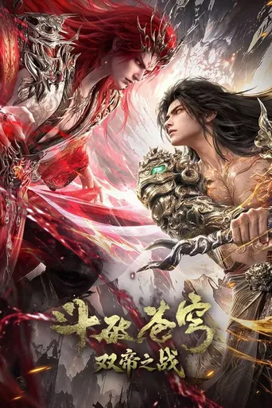

Расколотая битвой синева небес: Битва двух императоров 2026
High above Canaan Academy, the Soul Clan and the Sky Mansion Alliance stand locked in a tense standoff over the legendary Ancient Emperor Tou She. Using the ancient jade, Hun Tiandi unseals the emperor's hidden cave, igniting a fierce battle for the ultimate opportunity to ascend to godhood. With the aid of the Nihility Devouring Flame, Hun Tiandi successfully claims the nascent Emperor Pill, while his rival, Xiao Yan, vanishes into the chaos, his fate unknown. Having absorbed the pill's power, Hun Tiandi ascends to the pinnacle rank of Dou Di and unleashes the Soul Clan's massive army to annihilate the Sky Mansion Alliance. Just as despair threatens to overwhelm the defenders, an ancient resonance awakens within the Xiao Clan's bloodline. Gu Yuan realizes that Xiao Yan is alive and undergoing his own breakthrough to become a Dou Di—becoming humanity's final hope.
Открыть в каталогеДанные и постеры принадлежат их правообладателям. Этот продукт использует TMDB API, но не одобрен и не сертифицирован TMDB.